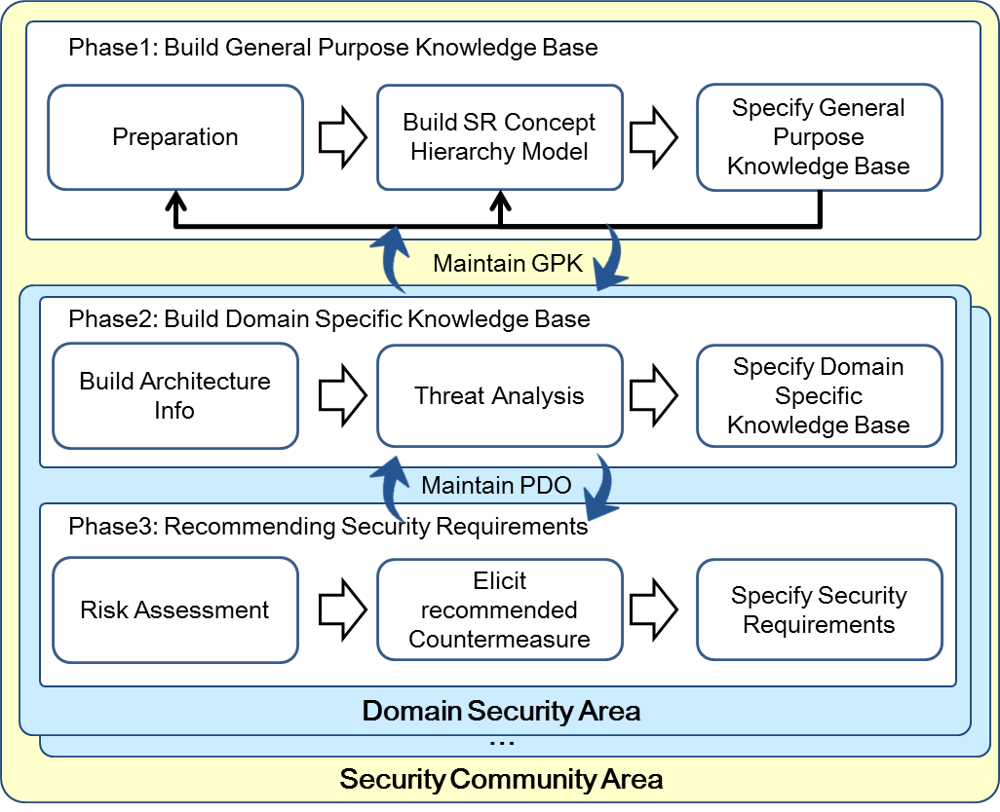
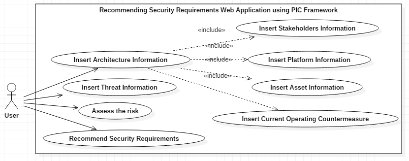
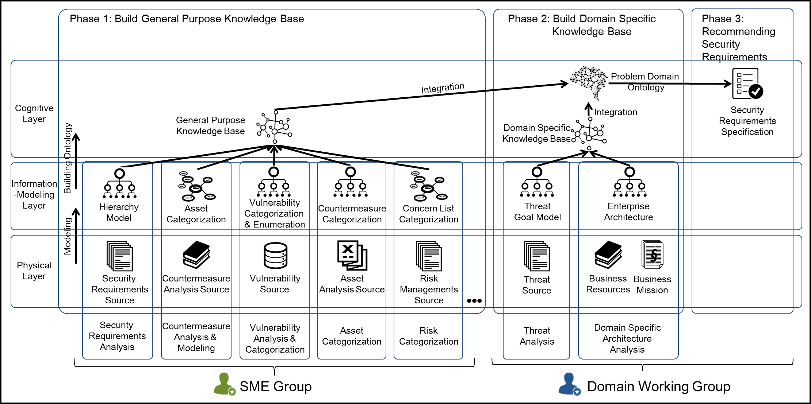
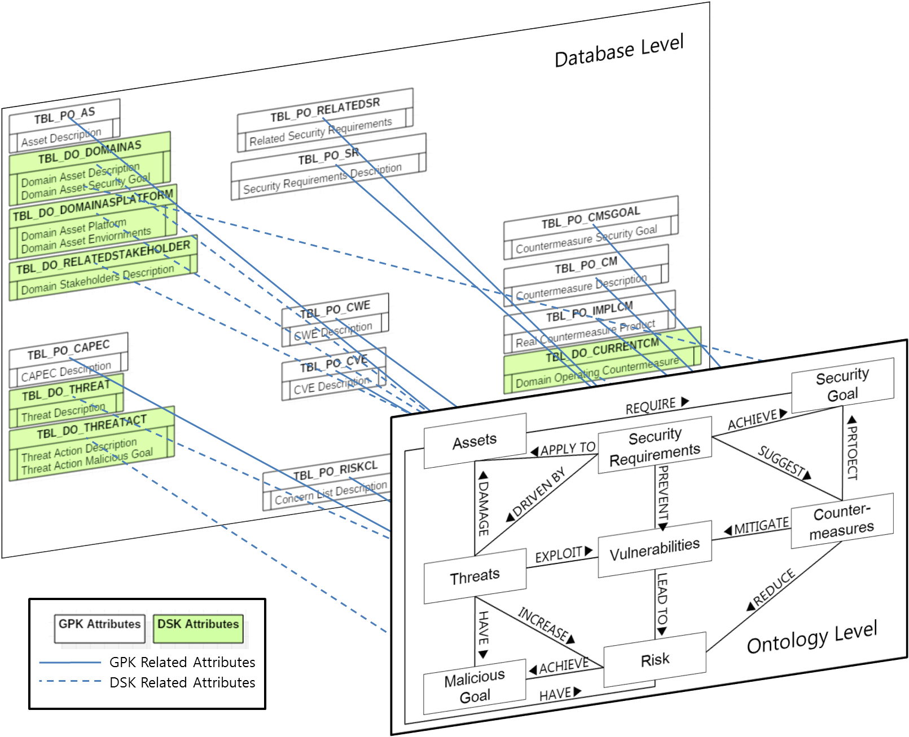

1. Overview

· This Web Application is for domain practical users to recommend security requirements using the
Problem Domain Ontology(PDO) using General Purpose Knowledge Base(GPK) by Security Subject Matter Experts(SME)
and Domain Specific Knowledge Base(DSK) by Domain practical user with conducting threat analysis and
analyzing domain architecture based on GPK.
· 보안 도메인 전문가에 의해 생성된 범용 지식기반을 바탕으로 일반 도메인의 보안 담당자가
해당 도메인의 아키텍처 정보와 도메인에 영향을 주는 위협정보를 통해 생성된 도메인 특화 지식기반을 결합한
문제 도메인 온톨로지를 활용하여 보안 요구사항을 추천받을 수 있다.
1.1 Version Information
· Version : 0.1
· Leading : Bong-Jae Kim
· Design : Seong-Sin Choi, Bong-Jae Kim
· Advisor : Seok-Won Lee
· Sponsored by : Republic of Korea Army, kNowledg Intensive Software Engineering Laboratory(NiSE Lab)
· Web Application version 0.1 provide the platform to insert the architecture information by domain practical users,
and to recommend the security requirements derived from threat analysis, and risk assessment related to the domain.
· 0.1버전에서는 일반도메인의 보안 담당자가 아키텍처 정보를 입력하고,
도메인에 영향을 주는 위협정보를 입력하여 위험 평가를 통해 식별된 위험으로 보안 요구사항을 도출할 수 있다.
1.2 Further Development
· Enhance the Usability : Configuration function, load and modification function to enhance usability
· Separate user's privilige : SME and domain practical users
· Insert the CRUD functions for General Purpose Knowledge: CRUD ontology using JENA API
· Recommend the security requirements using similarity comparison during threat analysis and risk assessments: Using Case Based Reasoning
· Enhance the visualized understanding using GUI elements
· Other improvement for the research purpose
· 사용자 운용 편의성 확장 : Configuration 기능, 기타 사용자 편의성을 증대시키는 로드 및 수정 기능
· 일반 도메인 사용자 밍 SME를 구분한 서비스 제공 : 실제 GPK관리 사용자와 DSK관리 사용자간 서비스 구별
· 범용지식 기반에 대한 CRUD 기능 추가 : JENA API를 활용하여 온톨로지의 내용을 직접 수정 및 입력
· 위협 및 위험 분석시 유사도 비교를 통한 보안 요구사항 추천 : Case Based Reasoning(CBR)기능을 활용한 유사도 비교를 통해 위협 분석 및 위험 평가 진행
· 그래픽 요소를 활용한 시각적 이해 향상 : 그래픽적 요소를 활용하여 사용자 친화적인 기능 추가
· 기타 연구 목적의 데이터 확장
2. Usecase Diagram and Services

· Insert Architecture Information: 이 기능은 도메인이 가지고 있는 이해당사자, 플랫폼, 자산, 현재 운용중인 보안 대응책 정보를 입력하게 된다.
여기서 입력된 정보를 바탕으로 전반적인 아키텍처의 보안과 관련한 요소들이 모델링 된다.
· Insert Threat Information: 이 기능은 도메인이 가지고 있는 자산에 실제 위협이 될만한 요소들에 대한 정보를 입력하는 단계이다.
본 웹 어플리케이션에서는 일반 도메인 보안 담당자에 의해 모델링된 위협을 바탕으로 정보를 입력하도록 한다.
· Assess the risk: 이기능은 식별된 자산과 위협 정보를 통해 위협을 평가한다.
위협에 대한 평가는 Bongjae Kim의 논문에서 제시된 내용을 바탕으로 진행하며, 추천하는 Countermeasure의 종류를 식별한다.
· Recommend Security Requirements: 최종적으로 보안 요구사항을 추천하여 명세하는 단계이다. 보안 요구사항은 제시하는 템플릿과 다이어그램을 활용하여 제시한다.
3. Framework Introduction

· 웹 어플리케이션은 기본적으로 Physical, Information-modeling, Cognitive Layer(PIC) 의 개념에 따라 작성하였다.
· Physical Layer는 물리적인 현상이나 사건 등이 존재하는 영역이며, 물리적인 현상이 표현된다. 본 웹 어플리케이션에서는 물리적 현상에 대해서는 나타내지 않는다.
(* 단 추후 확장시 물리적 현상은 로그파일이나, 상태 정보에 대한 내용이 포함될 수 있다.)
· Information-modeling Layer는 특정 관점에서 물리적인 현상이나 사건에 대해 표현한 영역이며, 본 웹 어플리케이션에서는 각 정보들의 요소들을 표현하는 데이터베이스로 나타내었다.
아키텍처 정보는 이해당사자, 자산, 현재 운용중인 대응책에 대해서 각 요소별로 모델링하여 표현한다. 그리고 위협은 확장된 i* 프레임워크를 활용하여 모델링된 요소들을 입력한다.
· Cognitive Layer에서는 다양한 모델들을 통합하여 종합적인 이해를 이끌어 낼 수 있는 영역이며, 다양하게 모델링된 요소들을 통합한 계층으로 온톨로지를 통해서 나타내었다.
온톨로지는 개념을 식별하고, 식별한 개념들간의 관계를 통해 이해를 도출할 수 있는 장점이 있다. 본 어플리케이션에서는 Protégé 4.3으로 만든 OWL을 활용하여 온톨로지를 구성하였다.
이러한 영역별 구현은 아래 그림과 같이 나타낼 수 있다.
